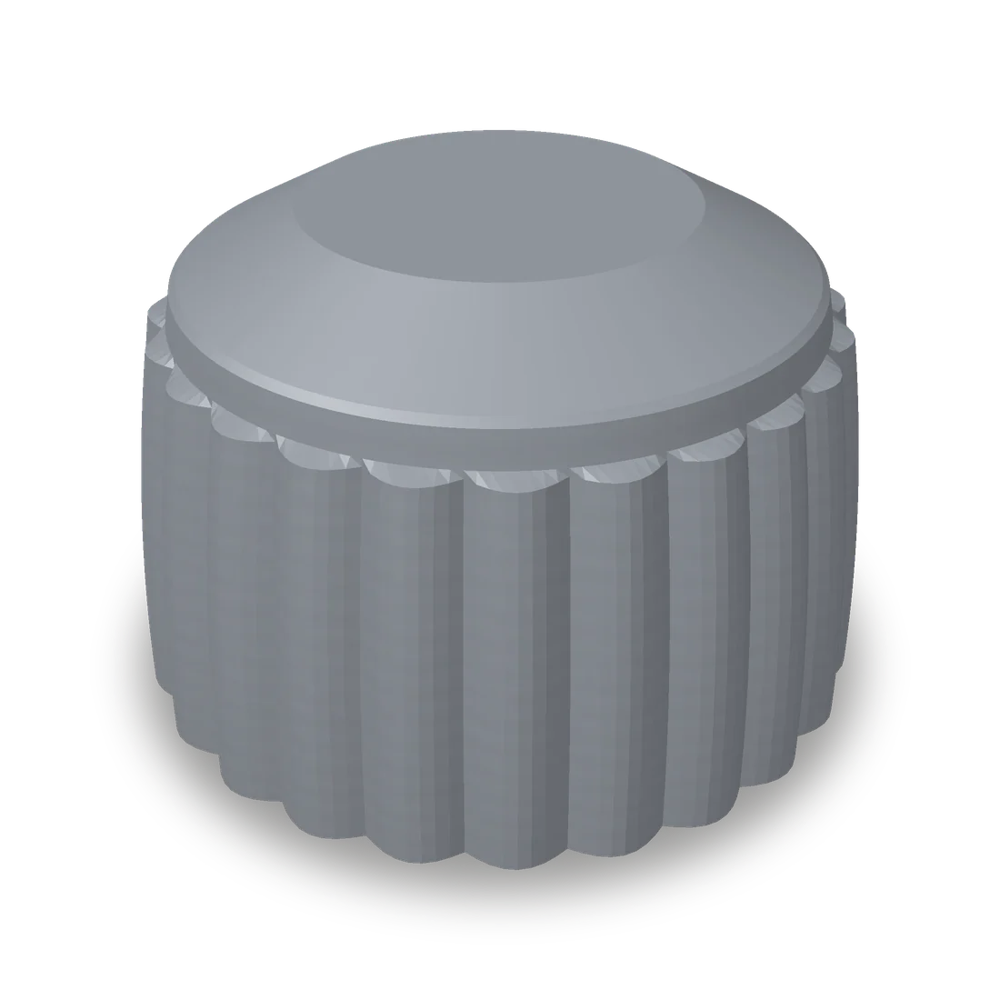

Manopola zigrinata
da 9,00 €
Manopola di ricambio con presa zigrinata, per elettrodomestici e attrezzature.
Colore: Grigio titanio, Nero opaco, Arancione, Bianco
Attacco: Albero a D, Albero tondo, Su misura
Descrizione
La manopola di forno, piano cottura, lavatrice o di un'attrezzatura da lavoro si è rotta o è andata persa? Questa manopola cilindrica con presa zigrinata si impugna bene anche con le mani bagnate o unte e ridà un aspetto ordinato all'apparecchio.
Scegli l'attacco giusto per il tuo perno: "Albero a D" per i perni con un lato piatto, il più comune su forni e fornelli; "Albero tondo" per i perni cilindrici. Selezionando l'attacco vedi la foto e il modello 3D del foro sotto la manopola.
Se il tuo perno ha una forma o una misura diversa, scegli "Su misura" e indica nel campo note il diametro del perno e il modello dell'apparecchio: realizziamo il foro sulle tue misure e ti mandiamo il preventivo su WhatsApp.
Caratteristiche
- Tecnologia
- Stampa 3D FDM
- Diametro
- 32 mm